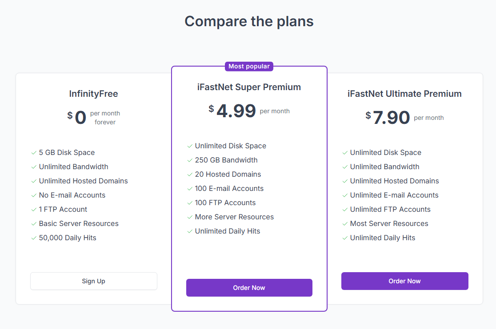
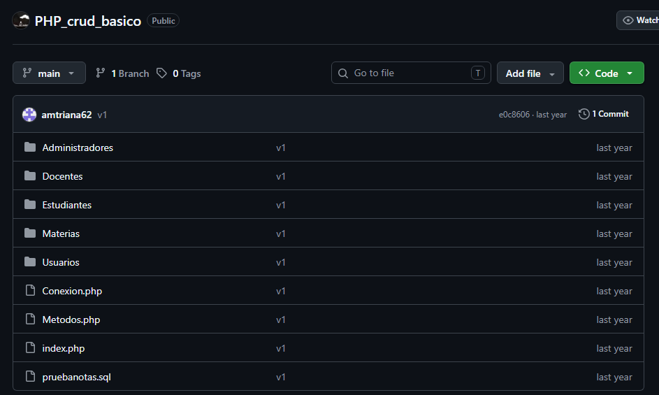
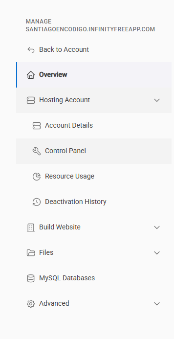
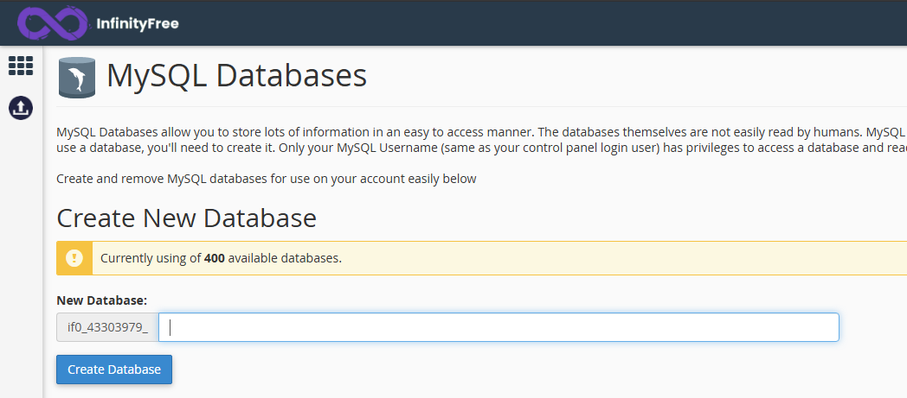
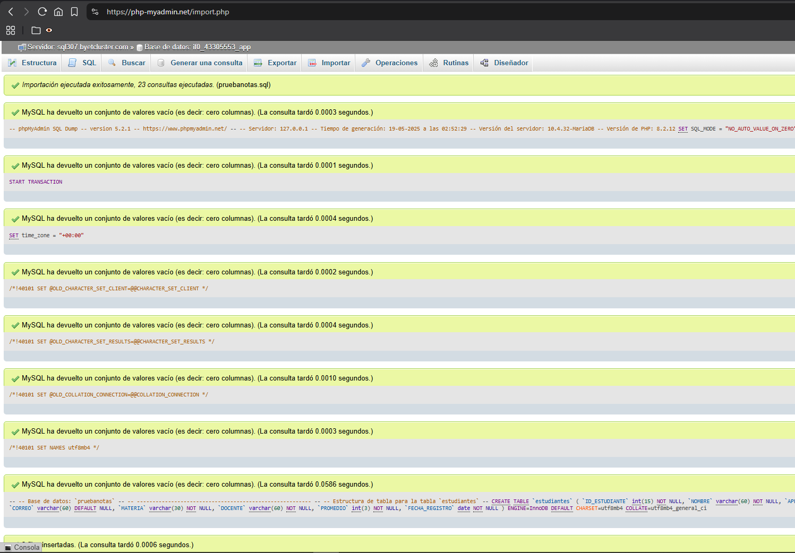
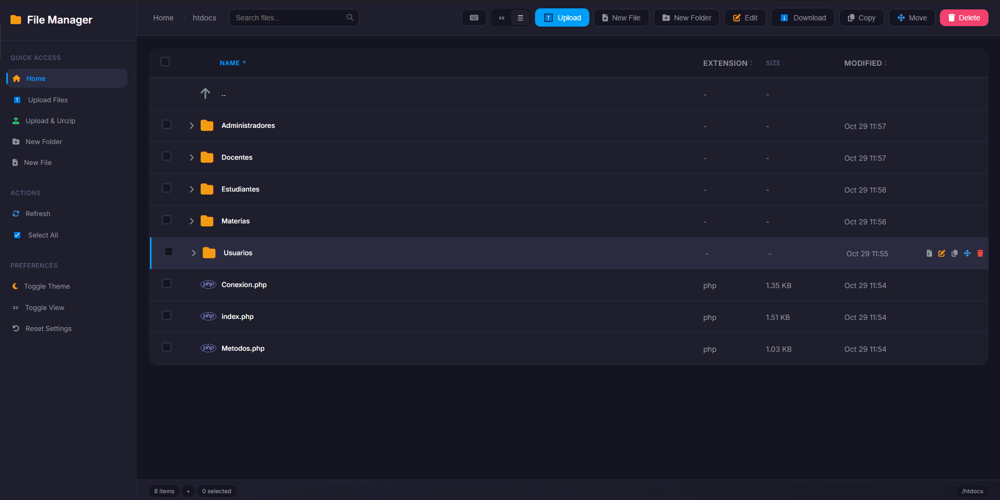
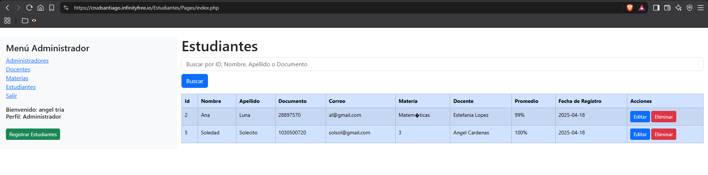

Investigación del servicio de alojamiento
Antes de iniciar el despliegue, es necesario comprender el margen de maniobra técnico y las limitaciones del servicio gratuito.
Características de alojamiento gratuito
InfinityFree proporciona un entorno real para PHP y MySQL. Según las especificaciones del servicio, las características principales son:
- 5 GB de espacio en disco.
- Ancho de banda ilimitado.
- PHP 8.3.
- MySQL 8.0 / MariaDB 10.6.
- Nombres de subdominios gratuitos.
- Traiga su propio dominio (dominios personalizados).
- 400 bases de datos MySQL.
- Servicio de DNS gratuito.
- Certificados SSL gratuitos.
- Soporte completo para
.htaccess.
A continuación, se muestra una comparativa de precios del servicio:

Captura tomada de https://www.infinityfree.com/premium/Restricciones críticas del plan gratuito
El plan gratuito de $0 presenta limitaciones estrictas que determinan si un proyecto es viable en este entorno:
- Sin cuentas de correo electrónico (Email Accounts).
- Sin panel de control cPanel (se utiliza VistaPanel).
- Hits no ilimitados (límite diario).
- Sin selección de versión de PHP.
- Sin soporte para la función
PHP mail(). - Sin administración completa de DNS (Full DNS Management).
- Sin soporte para MySQL remoto.
- Sin soporte para Python/Node.js.
Concepto de hit
Un hit representa cada petición HTTP individual que llega al servidor. No equivale a un visitante único; incluye todos los archivos que el navegador debe cargar (HTML, CSS, JS, imágenes).
Puesta en marcha y registro
El primer paso consiste en descargar el repositorio base del proyecto:
https://github.com/trianagel/PHP_crud_basico

Extraiga el repositorio en una carpeta local para su revisión. Verifique la estructura de carpetas y el número de archivos.
A continuación, registre una cuenta en InfinityFree:
- Ingrese a https://www.infinityfree.com/ y cree una cuenta.
- Seleccione la opción de plan gratuito (0 por mes) y haga clic en
Create Now. - Espere la verificación del sistema.
- Asigne un nombre al subdominio (por ejemplo,
tests-ventas) y seleccione la extensióninfinityfreeapp.com. Verifique la disponibilidad. - Complete la información adicional. Genere una contraseña segura (entre 8 y 15 caracteres, letras y números) y guárdela. Esta contraseña será utilizada para el panel de control y la base de datos.
- En la opción de consentimiento de correo (Email Consent), seleccione
I Do Not Approve. - Haga clic en
Create Accounty espere a que el sistema confirme que la cuenta está lista.
Creación de la base de datos
Desde el panel principal de la cuenta, haga clic en Control Panel.

En la sección Databases, seleccione MySQL Databases (no ingrese directamente a phpMyAdmin).

- En el campo
New Database, asigne un nombre (por ejemplo,app). - Haga clic en
Create Database. - El sistema generará las credenciales de conexión. Es fundamental guardar esta información de forma segura:
| Parámetro | Valor de ejemplo | Descripción |
|---|---|---|
| Nombre de la BD | if0_39370677_app |
Nombre de la base de datos con prefijo. |
| Nombre de usuario | if0_39370677 |
Usuario generado automáticamente. |
| Contraseña | (Tu contraseña del vPanel) | La clave creada en el registro. |
| Nombre del host | sql101.infinityfree.com |
Servidor de la base de datos. |
Importación de la base de datos
Una vez creada la base de datos, regrese a la sección MySQL Databases y haga clic en el botón Admin correspondiente a su base de datos. Esto abrirá phpMyAdmin.
- Seleccione su base de datos en el menú izquierdo.
- Diríjase a la pestaña
Importar. - En
Archivo a importar, seleccione el archivo.sqlincluido en la carpeta local del proyecto. Asegúrese de que el conjunto de caracteres seautf-8. - Desplácese al final y haga clic en
Continuar. - Verifique que la importación se haya ejecutado exitosamente y que las tablas se muestren en el panel izquierdo.

Carga de archivos del proyecto
Regrese a la página principal de su cuenta en InfinityFree y haga clic en File Manager.

- Ingrese a la carpeta
htdocs. Elimine cualquier archivo de prueba predeterminado que se encuentre allí. - Suba los archivos y carpetas del proyecto local. Puede utilizar la función de arrastrar y soltar o el botón de
Upload. - Si se sube uno a uno, verifique que todos los archivos se hayan transferido correctamente.
Either your FTP account quota has been exceeded, or the file upload was blocked by security, utilice la opción de carga manual (icono de subir) o suba los archivos en grupos más pequeños. A veces, las rutas de archivo muy extensas causan este error.
Configuración de la conexión
El proyecto debe apuntar a las credenciales de la base de datos remota de InfinityFree. En el File Manager, navegue por la carpeta htdocs hasta encontrar el archivo de conexión (en este caso, Conexion.php).
Haga clic derecho sobre el archivo y seleccione Edit. Modifique las variables con los datos proporcionados por InfinityFree:
<?php
class Conexion {
private static $instancia = null;
private $db;
private $driver = "mysql";
private $host = "sql101.infinityfree.com"; // Host proporcionado
private $bd = "if0_39370677_app"; // Nombre de la BD con prefijo
private $usuario = "if0_39370677"; // Usuario de la BD
private $contrasena = "TuContrasenaSegura"; // Contraseña del vPanel
// ...
}Save) y cierre el editor (Close).
Pruebas y solución de errores
Regrese al panel principal y copie la URL de su sitio web (Website). Ábrala en una pestaña nueva del navegador.

Navegue por la aplicación y verifique los enlaces del menú y el funcionamiento del CRUD. Si encuentra errores en el código original, complete la siguiente tabla de acuerdo con los requerimientos de la actividad:
| Descripción del problema/error | Código antes de la solución | Código después de la solución |
|---|---|---|
| Ejemplo: El enlace del menú apunta a una ruta local absoluta. | <a href="C:/xampp/htdocs/..."> |
<a href="./index.php"> |
Enlace del proyecto desplegado:
https://crudsantiago.infinityfree.io/